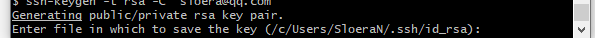
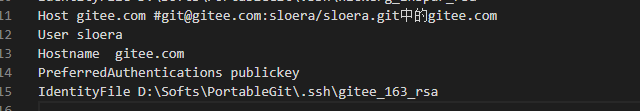
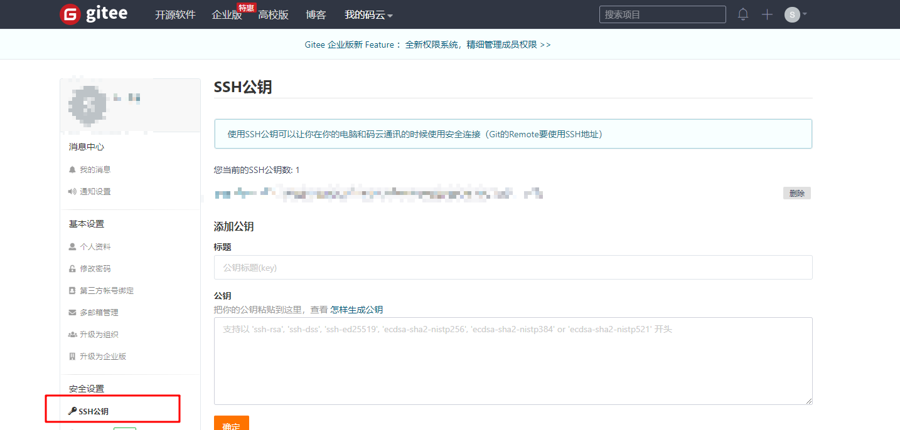

Git
Contents
git安装
-
下载git
https://git-scm.com/download/win
可下载portable版本。 PortableGit-2.23.0-64-bit.7z.exe
-
解压到自定义目录
添加
自定义目录/bin到系统变量>Path

自定义目录下，git-bash即为常用bash窗口。

以下如有命令，即为在
git-bash中执行
-
生成密钥
1 2 3ssh-keygen -t rsa -C "name@email.com" # ""内为自己的邮箱，起标识作用 #可自定义密钥位置及名称。 #密钥路径以`/`开头。密钥名称为不包括`.pub`的名称git-bash中，路径以/开头，如D：盘为/d/。可参考图片
-
添加密钥
1 2ssh-agent bash #直接在bash执行下一条命令连接不到认证服务器 ssh-add /path/.ssh/name #无`.pub`后缀 -
创建config文件。必须是修改“~/.ssh/config”文件。其余地方的不生效
1 2 3 4 5 6 7 8vi ~/.ssh/config ################start Host walk143 -- git@walk143:walk143/mavenssm.git中的walk143 User walk143 -- 未知 Hostname github.com --实际域名，或为gitee.com 一般不可更改 PreferredAuthentications publickey IdentityFile D:\path\.ssh\name --此处路径为win，可在资源管理器复制 ##################endgitee配置文件如下

-
添加公钥到服务器
复制生成的公钥
1 2cat /d/path/.ssh/name.pub #复制输出内容到服务器。github.com/gitee.comgitee在 安全设置>SSH公钥 添加

-
配置全局git用户名
1 2git config --global set user.name "name" git config --global set user.email "email@email.com"
远程仓库连接
前提条件：本地新建了一个仓库
-
服务器初始化一个空仓库
如
gitee.com新建一个空仓库，复制仓库ssh链接地址。 -
本地新建仓库
1 2 3git init #初始当前目录为git仓库 git add . #添加所有文件 git commit -m "提交信息" #进行一次提交 -
关联远程仓库
1 2 3 4 5 6 7 8 9 10 11 12###本地执行 git remote add origin git@gitee.com:sloera/vue.git #其中 origin为后面地址的别名 git@gitee.com:sloera/vue.git为上述仓库ssh地址 git branch --set-upstream-to=origin/master master #当服务器新建为空仓库时，由于尚未生成分支，此条语句不可执行。使用以下命令将本地仓库推送到服务器 #其中 origin/master 代表上述添加别名仓库的master分支 最后的master代表关联到本地的master分支 #当本地目录已有文件，需要更新远程 先执行 `git branch -B master` 新建一个分支 git push --set-upstream origin master #关联当前分支到origin 的 master分支 git push #将本地修改推送到远程服务器 -
本地与远程分支名不同设置
1 2 3git config --local/global push.default upstream #指定可以推送到远程不同名分支 git branch -u origin/source #指定当前分支跟踪远程source分支 git push #即可将本地的当前分支(如master)推送到远程的source分支
迁移git密钥
将win下的密钥，同步到wsl子系统中
-
复制密钥
将win下生成的密钥复制到wsl的
root/.ssh目录下 -
复制
config配置文件修改其中
IdentityFile的路径，改为wsl自己的路径
部分git操作
全局设置
取消全局username，email
|
|
在repo中设置用户
|
|
全局用户默认“name/name@email.com"
|
|
添加远程仓库
|
|
设置win/linux换行符转换
一般禁止转换回车换行符。
|
|
git status中文编码混乱
|
|
.gitignore文件
gitignore只能忽略未跟踪文件，对于已跟踪文件，需要根据取消跟踪已commit文件操作
配置语法
- 以
/开头表示根目录,防止递归 - 以
/结尾表示指定目录 - 以
!开头表示不过滤（跟踪）此项配置匹配到的文件或目录 - 以
#开头表示注释，如需转义在前面加斜杠，/#
可使用如下通配符
|
|
包含多层子目录下的文件
|
|
取消跟踪已commit文件
对某个文件取消跟踪
|
|
修改git默认的编辑器
|
|
从历史记录中永久删除某个文件的追踪
|
|
关联已有代码到一个已存在的远程分支
|
|
git 代理
|
|
Author Sloera
LastMod 2021-12-18 (90c2871)